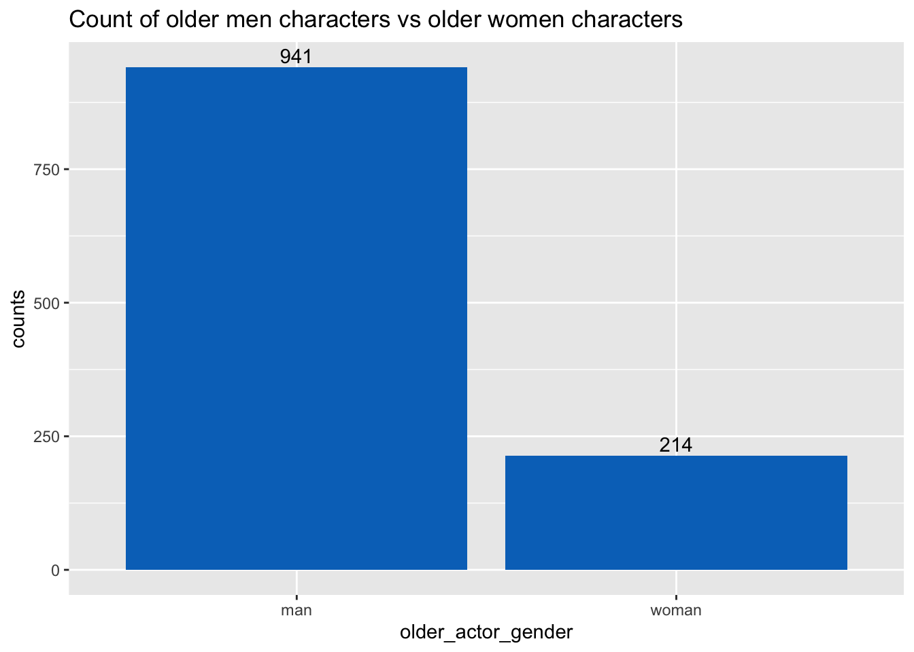
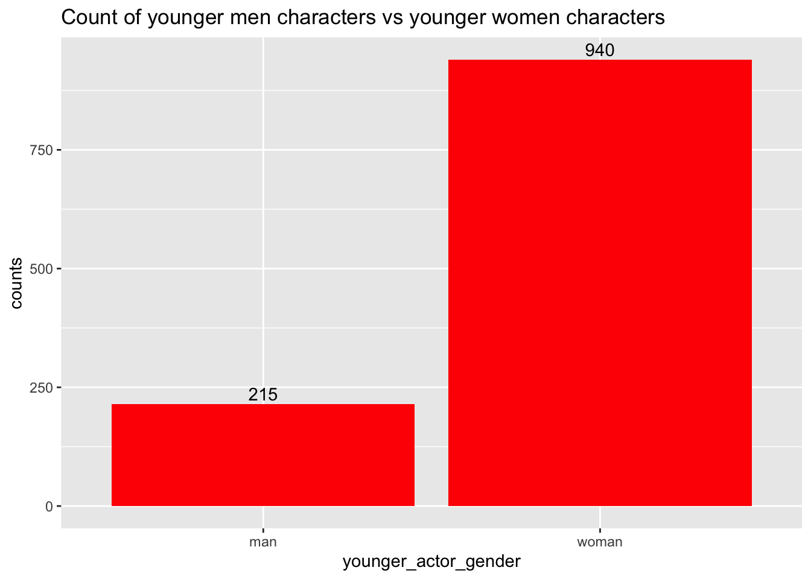
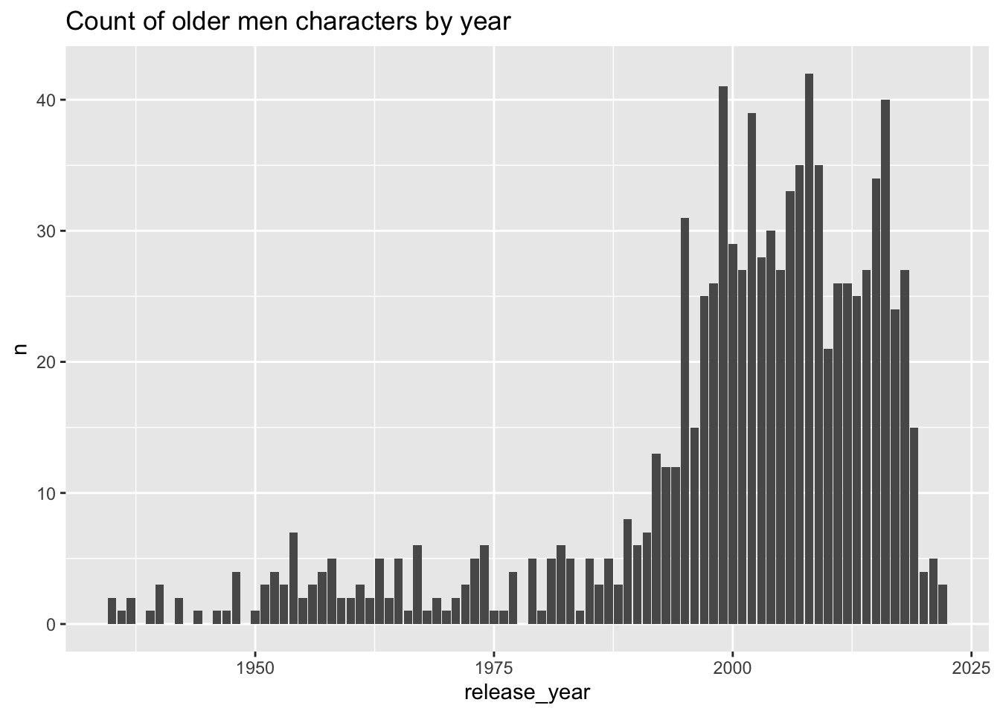

here() starts at /Users/jacobmatta/Documents/R/jacobmatta-MADA-portfolio
library(Hmisc)
Loading required package: lattice
Loading required package: survival
Loading required package: Formula
Attaching package: 'Hmisc'
The following objects are masked from 'package:dplyr':
src, summarize
The following objects are masked from 'package:base':
format.pval, units
library(ggplot2)library(plotly)
Attaching package: 'plotly'
The following object is masked from 'package:Hmisc':
subplot
The following object is masked from 'package:ggplot2':
last_plot
The following object is masked from 'package:stats':
filter
The following object is masked from 'package:graphics':
layout
Rows: 1155 Columns: 13
── Column specification ────────────────────────────────────────────────────────
Delimiter: ","
chr (6): movie_name, director, actor_1_name, actor_2_name, character_1_gend...
dbl (5): release_year, age_difference, couple_number, actor_1_age, actor_2_age
date (2): actor_1_birthdate, actor_2_birthdate
ℹ Use `spec()` to retrieve the full column specification for this data.
ℹ Specify the column types or set `show_col_types = FALSE` to quiet this message.
Changing variable names for the older and younger character variables just so it’s easy to read
#changing actor gender variableage_gaps <- age_gaps %>%rename(older_actor_gender = character_1_gender)age_gaps <- age_gaps %>%rename(younger_actor_gender = character_2_gender)#changing actor name variable name age_gaps <- age_gaps %>%rename(older_actor_name = actor_1_name)age_gaps <- age_gaps %>%rename(younger_actor_name = actor_2_name)#changing birthday actor name age_gaps <- age_gaps %>%rename(older_actor_birthdate = actor_1_birthdate)age_gaps <- age_gaps %>%rename(younger_actor_birthdate = actor_2_birthdate)#changing actor age variableage_gaps <- age_gaps %>%rename(older_actor_age = actor_1_age)age_gaps <- age_gaps %>%rename(younger_actor_age = actor_2_age)
Using the describe function from the Hmisc package to see how many of the observations in the character_1_gender variable are man and woman. Then producing a tibble with older actor variable
#using the describe function from the Hmisc package to see how many of the observations in the character_1_gender variable are man and woman describe(age_gaps$older_actor_gender)
age_gaps$older_actor_gender
n missing distinct
1155 0 2
Value man woman
Frequency 941 214
Proportion 0.815 0.185
#producing tibble with older actor variablefreq_older_char <- age_gaps %>%group_by(older_actor_gender) %>%summarise(counts =n())freq_older_char
# A tibble: 2 × 2
older_actor_gender counts
<chr> <int>
1 man 941
2 woman 214
Producing plot for man vs woman that play the older character
older_plot =ggplot(freq_older_char, aes(x = older_actor_gender, y = counts)) +geom_bar(fill ="#0073C2FF", stat ="identity") +geom_text(aes(label = counts), vjust =-0.3) +ggtitle("Count of older men characters vs older women characters")older_plot

Producing a tibble with frequencies of younger actor variable
describe(age_gaps$younger_actor_gender)
age_gaps$younger_actor_gender
n missing distinct
1155 0 2
Value man woman
Frequency 215 940
Proportion 0.186 0.814
# A tibble: 2 × 2
younger_actor_gender counts
<chr> <int>
1 man 215
2 woman 940
Producing plot for man vs woman that play the younger character
younger_plot =ggplot(freq_younger_char, aes(x = younger_actor_gender, y = counts)) +geom_bar(fill ="red", stat ="identity") +geom_text(aes(label = counts), vjust =-0.3) +ggtitle("Count of younger men characters vs younger women characters")younger_plot

Summary of findings so far
In the movies included in the data it is a more common for a male actor to play the older character when compared to women playing the older character
With that in mind, I am curious if there is any relationship between movies with an older man character and the release date of the movie
Creating a data set with just men who are the older character
`summarise()` has grouped output by 'release_year'. You can override using the
`.groups` argument.
#filtering just the men character from the women older characters year_vs_oldermen =filter(year_vs_oldergender, older_actor_gender =="man")#removing the gender column because they are all male year_vs_oldermen <- year_vs_oldermen[,-2]
Using ggplot2 to create a bar plot then using plotly to create an interactive bar plot of the year of release vs count of men as the older character
plot_oldermen_byyear =ggplot(year_vs_oldermen, aes(x=release_year, y=n)) +geom_bar(stat ="identity") +ggtitle("Count of older men characters by year")plot_oldermen_byyear

#creating an interactive bar plot using ggplotlyinteractive_plot =ggplotly(plot_oldermen_byyear)interactive_plot
The movies included in the data have more men who are older characters when compared to women
By stratifying the movies by release year, it appears that the trend of men starring as the older character in the movie couple began to steadily increase in the early-to-mid 1990’s and peaked in the year 2008, when 42 movies were released with an older male character in the movie couple
Since 2016, there appears to be a decrease in movies that have a man playing the older character in a couple
In 2022, there were just three movies released with a man playing he older character in the movie couple
The Future
Has Hollywood moved on from old man lovers? I wouldn’t mind this. Either way, I am curious to see where Hollywood lovers will take us.